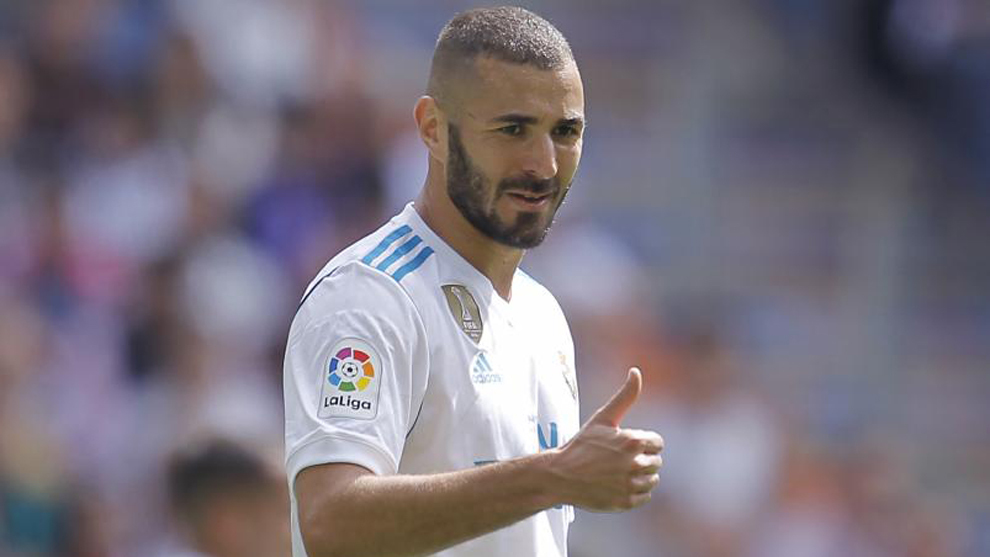

LIGA SANTANDER
La leyenda del fondo de armario de Barcelona.
Una mezcla de sorpresa y alegría se apoderó del vestuario visitante del Camp Nou el pasado sábado sobre las tres de la tarde. Mientras se cambiaban para saltar a calentar al césped del estadio del Barcelona, los futbolistas del Athletic Club se enteraron a través de las redes sociales de que el entrenador azulgrana, Ernesto Valverde, iba a dar descanso a Messi y Busquets. La reacción a la noticia fue prácticamente unánime. "Van a ser suplentes los dos mejores del equipo", concluyeron los 'leones', conscientes de que el 'Txingurri' les estaba haciendo un favor quitando a los dos futbolistas del Barça que mejor interpretan los espacios y, por ende, mejor salen de la presión alta del oponente.
Leer artículo completo...¿Keylor Navas titular?
Keylor Navas volverá a ser titular este martes en Moscú ante el CSKA. Según el medio belga 'HLN', el portero de Costa Rica será de la partida en el duelo que enfrenta a los españoles ante los rusos a partir de las 21.00 horas en Luzhniki.
Leer artículo completo...
Tengo que ir tomando mi lugar poco a poco, me gustó que coreasen mi nombre en el derbi
Benzema,¿finalista para el balón de oro?
Bale, Benzema, Courtois, Isco, Marcelo, Modric, Ramos y Varane son los ocho madridistas que optarán al Balón de Oro 2018 después de que se diera a conocer la lista definitiva. Ocho de los 30 candidatos que optar al prestigioso premio que rinde homenaje al mejor futbolista del año, según la revista France Football.El equipo blanco es, con absoluta claridad, el gran protagonista de la lista definitiva, sin incluir a Cristiano Ronaldo, que opta de nuevo a este premio por sus éxitos con el Real Madrid pese a militar en la Juventus en estos momentos. La victoria en la Champions por tercera temporada consecutiva y la presencia de jugadores entre los finalistas y vencedores del Mundial de Rusia han decantado la balanza a la hora de elegir un gran número de jugadores del Madrid.
Leer artículo completo...
Ir a noticias de baloncesto...
Creado por Raúl Ramírez